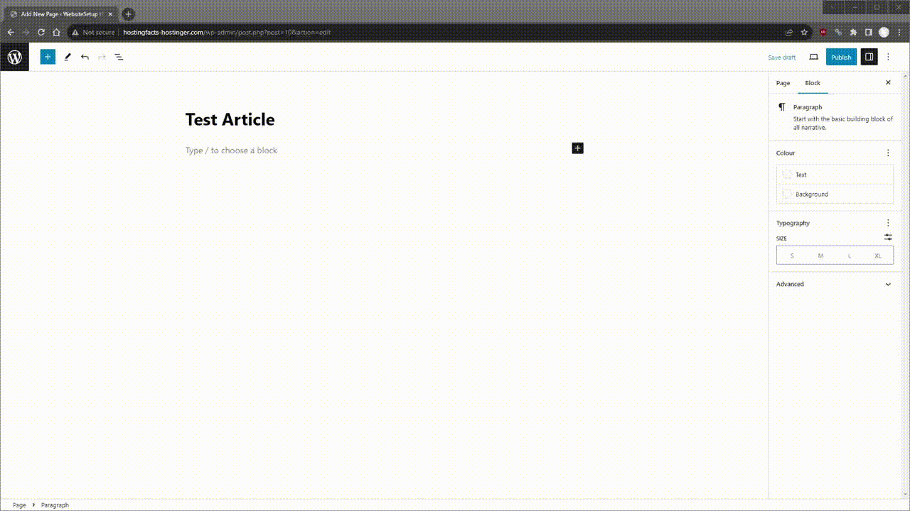

Kaip sukurti internetinę svetainę!
Norite išmokti susikurti svetainę?
Šis pradedančiųjų vadovas padės jums sukurti savo svetainę paprastu nuosekliu būdu.
Tai neužtruks ilgai, o jei tai padarysite tokiu būdu, ilgainiui iš tikrųjų galėsite sutaupyti šiek tiek pinigų (apie tai vėliau).
Nemokate programuoti?
Jokių problemų – mokėti programuoti nėra būtina!
Šį vadovą parengėme specialiai pradedantiesiems. Mokėti HTML, CSS bei Javascript programavimo kalbas yra didelis pliusas, tačiau naudojant “wordpress” programą galimą be jų apseiti.
Ir jei viską darysite teisingai, galėsite susikurti savo svetainę be jokių apribojimų ir brangių operacijų mokesčių.
Nerimaujate, kad tai yra laiko ir pinigų švaistymas?
Daugeliui svetainių reikia tik domeno pavadinimo ir svetainės hostingo, kad jos veiktų ir aptarnautų lankytojus. Mažoms svetainėms tai neturėtų jums kainuoti daugiau nei 5 EUR per mėnesį.
Vidutinis laikas sukurti svetainę naudojant šį vadovą yra maždaug viena valanda – daugumai pavyksta per tą laiką sukurti tvirtą pagrindą.
Pasiruošę sukurti savo svetainę šiandien? Išgerkite kavos ar arbatos ir pradėkime!
Pirmas žingsnis: Pasirinkite domeno pavadinimą
Pirmiausia: kiekvienai svetainei reikia pavadinimo.
Be pavadinimo (taip pat žinomo kaip domeno pavadinimas), jūsų svetainė tiesiog negali veikti. Pagalvokite apie tai kaip apie namo adresą, kur adresas yra domeno pavadinimas, o namas yra jūsų svetainė.
Renkantis domeno vardą, reikia atsižvelgti į keletą taisyklių:
Jei kuriate verslo svetainę, jūsų domeno pavadinimas turi atitikti įmonės pavadinimą.
Jei planuojate sukurti asmeninę svetainę arba asmeninį tinklaraštį, tada naudoti visą savo vardą kaip domeno pavadinimą yra geras pasirinkimas.
Jei įmanoma, pabandykite gauti .com versiją (dažniausiai šis domenas yra vienas brangesnių, rinkitės pagal kainą).
Atminkite, kad yra daugiau nei 100 milijonų aktyvių domenų vardų, todėl gali būti paimti visi geriausi. Tačiau per daug nesigilinkite į tai – visada galite nusipirkti kitą domeno vardą (jei reikia). Jei neturite domeno, kol kas jo nepirkite. Galite gauti jį nemokamai atlikdami 2 veiksmą.
Domeno vardai paprastai baigiasi .com, .net, .org Jei norite, kad jūsų domeno vardo pabaiga būtų skirta pasaulio gyventojams, pabandykite užregistruoti .com versiją. Jei norite taikyti vietiniams lankytojams iš Lietuvos, rinkitės .lt
Antras žingsnis: susikurkite hostingo paskyrą
Be domeno vardo, jums taip pat reikės hostingo paslaugų..
Hostingas yra paslauga, panaši į svetainių kūrėjus, leidžianti užregistruoti domeno pavadinimą ir sukurti svetainę (rekomenduojame „Hostinger“ visiems, kurie tik pradeda kurti).
Pasirinkę tinkamą žiniatinklio prieglobos parinktį, galite maksimaliai padidinti lankstumą ir galiausiai pasiekti daugybę pajamų gavimo parinkčių.
Jei naudojate hostingo paslaugas, galite sukurti svetainę (-es) naudodami įvairius nemokamus svetainių kūrimo įrankius, tokius kaip „WordPress“, „Joomla“, „Drupal“ ir kt. Tai suteikia daug lankstumo kuriant svetainę.
Tinkamo hostingo paslaugų pasirinkimas turi daug svarbių pranašumų jums ir jūsų svetainei, ypač jei planuojate užsidirbti pinigų iš savo svetainės.
Hostingo paslaugataip pat talpina jūsų svetainės failus, todėl jūsų svetainė yra prisijungusi 24 valandas per parą, 7 dienas per savaitę.
Nors gali atrodyti, kad visi hostingo paslaugų tiekėjai iš esmės yra vienodi, yra didžiulių greičio ir patikimumo skirtumų. Paskutinis dalykas, kurio norite, yra prarasti klientus ar gerbėjus vien dėl to, kad jūsų hostingas veikia netinkamai.
Kaip jau minėjome anksčiau, rekomenduojame “Hostinger” paslaugas, tačiau galite naudoti ir kitą šių paslaugų tiekėja. Verta paminėta, kad kai kurie “Hostinger” planai suteikia jums nemokamą domeną, dėl to gerai, kad nepaskubėjote domeno pirkti iš anksto.
Trečias žingsnis: sukurkite svetainę
Dabar laikas sukurti svetainę. Šiame pavyzdyje mes naudosime „WordPress“.
„WordPress“ yra populiariausias nemokamas svetainių kūrėjas, veikiantis daugiau nei 40% visų interneto svetainių. „WordPress“ yra gana paprasta ir neturi didžiulės mokymosi kreivės.
Kadangi jau turite domeno pavadinimą ir hostingą, galite visiškai nemokamai nustatyti „WordPress“ naudodami „Hostinger“ arba bet kurį kitą hosstingo paslaugų teikėją, kuris vienu spustelėjimu įdiegia nemokamus svetainių kūrėjus.
1 veiksmas: prisijunkite prie savo žiniatinklio prieglobos paskyros.
Jei naudojate Hostinger, eikite į https://hostinger.com/cpanel-login/
2 veiksmas: įdiekite „WordPress“.
„Hostinger“ automatiškai įdiegti programas yra labai paprasta. Tiesiog eikite į Svetainės → Tvarkyti. Kairėje šoninėje juostoje ieškokite automatinio diegimo programos ir spustelėkite ją.
Jei naudojate kitus hostingo paslaugų teikėjus, jų prietaisų skydelyje ieškokite „WordPress“.
Tada turėsite pridėti pagrindinės informacijos apie savo svetainę, kurią vėliau galėsite pakeisti, pvz., svetainės pavadinimą, el. pašto adresą, vartotojo vardą ir slaptažodį.
Ketvirtas žingsnis: sukurkite savo svetainės dizainą
Kai nustatysite „WordPress“ svetainę, galėsite prisijungti iš savodomenas.com/wp-admin.
Prisijungę eikite į „WordPress“ prietaisų skydelį ir kairiajame meniu pasirinkite „Išvaizda“.
Čia galite koreguoti savo svetainės temą, išdėstymą, spalvas ir šriftus.
Iš esmės kiekvieną vizualinį pakeitimą, kurį norite atlikti savo svetainėje, galite atlikti skirtuke „Išvaizda“.
Pasirinkę tinkamą temą, tiesiog spustelėkite „Įdiegti“, tada „Aktyvuoti“.
Neskubėkite, kad surastumėte tinkamą savo svetainės temą. Nesijaudinkite, jei pasirinksite tai, kas jums nepatinka – visada galite jį pakeisti atgal.
Penktas žingsnis: sukurkite savo svetainės struktūrą ir puslapius
Pasirinkę šabloną, turite sukurti struktūrą ir pridėti svarbiausius puslapius.
Paprastai tai yra:
- Pagrindinis puslapis
- Apie mus
- Kontaktų puslapis
- Mūsų paslaugos / produktai
- Galerija
- Atsiliepimai
Apmąstykite, kurių puslapių jums reikia labiausiai, ir pradėkite nuo jų. Įsitikinkite, kad įtraukėte tuos svarbius puslapius į savo antraštę ir poraštę, kad lankytojai galėtų lengvai juos pasiekti visoje svetainėje.
Puslapių pridėjimas ir turinio publikavimas
Tuščia svetainė be jokių puslapių ar turinio niekam nėra naudinga, todėl norėdami, kad svetainė būtų prieinama ir įdomi, turime pridėti keletą puslapių ir tinklaraščio įrašų.
Norėdami pridėti puslapių į savo „WordPress“ svetainę, kairiajame meniu eikite į „Puslapiai“ ir spustelėkite mygtuką „Pridėti naują“.

Tai nuves jus į „WordPress“ blokų rengyklę.
Jei čia lankotės pirmą kartą, bus rodomas greitas žingsnis po žingsnio pamoka apie tai, kaip tai veikia ir kur yra tam tikros funkcijos.
Tai gana lengva dirbti; viskas yra blokuota, o tai reiškia, kad jei norite ką nors pridėti prie savo puslapio, jums tereikia iš meniu pasirinkti tinkamą „bloką“ ir jį užpildyti.
Kairėje, turinio bloko skiltyje, galite pasirinkti iš kelių turinio parinkčių. Kiekvienas iš jų atlieka skirtingą paskirtį ir prideda prie puslapio skirtingą vaizdinį elementą.
Arba dešiniajame meniu galite keisti kai kuriuos viso puslapio nustatymus, pvz., autorių, puslapio nuolatinę nuorodą (URL), rodomą vaizdą ir kt.
Dešiniojo meniu viršuje galite spustelėti skirtuką „Blokuoti“ ir tinkinti kiekvieno bloko, kurį pasirinkote puslapyje, nustatymus.
Kai būsite patenkinti puslapiu, galite padaryti jį viešą arba privatų. Pirmuoju atveju turinys bus matomas bet kuriam lankytojui, o antroji reiškia, kad jis bus matomas tik jums per jūsų svetainės prietaisų skydelį – tai naudinga parinktis, kurią galima naudoti dirbant su konkrečiu puslapiu.
Taip pat yra parinktis peržiūrėti atliktus pakeitimus arba suplanuoti puslapio paskelbimo datą ir laiką.
Struktūros ir navigacijos kūrimas
Dabar, kai sukūrėte puslapius, turite juos įtraukti į naršymo (meniu) juostą.
Tai yra visoje jūsų svetainėje esantis meniu, suteikiantis lankytojams prieigą prie likusio turinio.
Taip pat galite kurti antrinius elementus, tai reiškia, kad puslapiai bus atskleisti, kai naudotojai užves pelės žymeklį ant jų.
Šeštas žingsnis: pridėkite logotipą ir favicon’ą
Šiuo metu jūsų svetainė turi turinį ir struktūrą, o tai reiškia, kad esate beveik finišo tiesiojoje. Norėdami užbaigti dalykus, turite įtraukti logotipą ir favicon. Abu juos galima pridėti per meniu „Site identity“.
Norėdami jį pasiekti, eikite į „Appearance“ kairiajame meniu ir spustelėkite „Customize“, o po to – parinktį „Site Identity“. Skiltyje „Logotype“ spustelėkite „Choose logytpe” ir pasirinkite savo logotipo failą iš vaizdų arba įkelkite jį. Kai tai padarysite, jūsų logotipas automatiškai pasirodys jūsų svetainėje.
Jūsų svetainė paruošta!
Šauniai padirbėta! Šiame etape jūsų svetainė turėtų veikti sklandžiai.
Jei susiduriate su sunkumais arba jums reikia pagalbos kuriant svetainę, nedvejodami susisiekite su mumis.
Be to, svarbu susieti svetainę su „Google Search Console“. Šis vertingas įrankis, dar žinomas kaip GSC, padeda stebėti srautą iš paieškos sistemų ir nustatyti, kuris turinys labiausiai atliepia jūsų auditoriją. „Google Search Console“ pateikia išsamų jūsų svetainės našumo vaizdą ir pateikia įžvalgų, kurios yra būtinos jos priežiūrai. Šio įrankio konfigūravimo procesas yra nesudėtingas ir turėtų užtrukti maždaug 10 minučių.